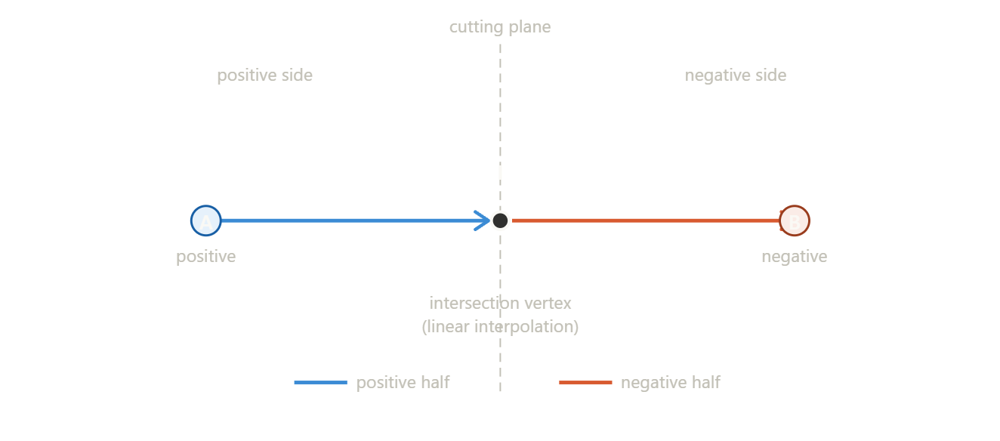
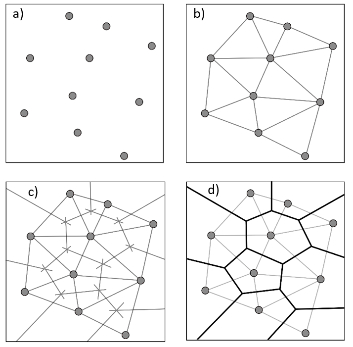

Real-Time
Procedural
Fracturing
A runtime mesh destruction system for any geometry — no precomputation, no baked assets. Voronoi splitting, Jolt physics integration, and multithreaded generation achieving a 78% speedup.
For this project I worked on creating a real time destruction system applicable to any tipe of mesh, (convex or concave, as long as it can be represented as a triangle mesh) focusing on the optimization aspect a lot, as my main goal was to make this program as flexible and reusable as possible. That is why went for real time fracturing rather than precomputed: this way any mesh can be used easily without needing any precalculations, as well making it versatile for generating different fracture geometry. However to achieve this I had to focus heavily on performace, testing the systems's limit with multiple stress tests. I will include a small section on optimization, however this part is very engine specific and was a result of in depth profiling, which might be different based on the starting point that's being used.
Mesh Splitting
The first step to implement fracturing was creating a mesh splitter system capable of dividing a mesh along a plane, creating two different ones. This process is well explained in this paper , which was the one I followed for the geometry calculations and I recommend taking a look at it.

Initialization
Firstly I created structs to store Vertices, Edges and Faces that store all their needed information like position,
index, adjacent geometry and side, filling them with the mesh geometry. Then I made a ClipMode struct that lets me
choose which side of the mesh I want as a result, saving me a lot of heavy unnecessary calculations.
The core clipping logic is as follows, going over vertices, edges and faces in order and offering early outs if the
ClipMode is not the desired one.
int CMesh::Clip(glm::vec4 plane, ClipMode mode) { if (ProcessVertices(plane) == 1) // all vertices on positive side return 1; else if (ProcessVertices(plane) == -1) // all vertices on negative side return -1; ProcessEdges(mode); ProcessFaces(plane, mode); return 0; }
Process Vertices
The function goes over the mesh and calculates the distance of every vertex relative to the cutting plane, classifying them by positive and negative based on the side they are on; this classification drives everything that follows, no geometry is modified yet but its essential for the following calculations.
Process Edges
With every vertex classified, edges can be checked. If both endpoints are on the same side the edge stays intact and gets the same label. However when an edge crosses the plane the intersection point is calculated using linear interpolation between the two endpoints based on their signed distances, and a new vertex is inserted there. The edge is then split: one half goes to the positive side, one to the negative, each referencing the new intersection vertex as their shared endpoint. This is what produces the clean cut line across the mesh.

Process Faces
Once edges are processed, each face is checked to determine which side it belongs to.
A face whose vertices are all positive goes to the positive side, all negative goes to the negative side.
Faces that were cut by the plane now have a mix of positive and negative edges, so they need to be closed:
the cut creates an open boundary along the plane, and a closing edge is added to seal each open face.
These closing edges also form the new flat face that sits exactly on the cutting plane, which is what gives
each mesh half its interior cap.
As follows is the logic to check if a face is left open and to close it accordingly.
bool CMesh::GetOpenPolyline(CFace face, size_t& start, size_t& final) { // reset occurrence counts on all edge vertices for (size_t j : face.edge) { m_cVertices[m_cEdges[j].vertices.first].occurs = 0; m_cVertices[m_cEdges[j].vertices.second].occurs = 0; } for (size_t j : face.edge) { m_cVertices[m_cEdges[j].vertices.first].occurs++; m_cVertices[m_cEdges[j].vertices.second].occurs++; } start = std::numeric_limits<size_t>::max(); final = std::numeric_limits<size_t>::max(); // vertices with occurs == 1 are the open endpoints for (size_t j : face.edge) { size_t i0 = m_cEdges[j].vertices.first; size_t i1 = m_cEdges[j].vertices.second; if (m_cVertices[i0].occurs == 1) final = i0; if (m_cVertices[i1].occurs == 1) start = i1; } return start != std::numeric_limits<size_t>::max(); }
if (GetOpenPolyline(tempFace, start, final)) { Edge closeEdge; closeEdge.vertices.first = start; closeEdge.vertices.second = final; closeEdge.face[0] = i; closeEdge.side = side; size_t closeEdgeIdx = Edges.size(); Edges.push_back(closeEdge); Faces[i].edge.push_back(closeEdgeIdx); Edge reversedEdge; reversedEdge.vertices.first = final; reversedEdge.vertices.second = start; reversedEdge.side = 0; size_t reversedEdgeIdx = Edges.size(); Edges.push_back(reversedEdge); planeFace.edge.push_back(reversedEdgeIdx); }
Clean-up, Triangulation & Normals
Now the calculation results need to be converted into a renderable mesh. To do this all vertices on the requested side are collected and put into a remapping table, then each face is triangulated in a fan from the first vertex. Faces with fewer than three valid vertices after filtering are skipped to avoid degenerate geometry.

Normals are computed per face using the cross product, then accumulated into each shared vertex and normalized to reduce the the total number of normals needed compared to storing one per triangle, this is just an intermediate step as at the very end they will be recalculated since flat normals look much better in this case (see optimization section).

One thing to keep in mind to avoid getting degenerate geometry is that new intersection vertices get created independently per edge, which can leave near duplicate vertices sitting right next to each other along the cut. A remapping pass finds these duplicates within a small epsilon threshold and merges them, making sure the closing face has no invisible cracks.


Voronoi Generation
With a working mesh splitter, the next question was how to generate a realistic fracture pattern. The approach I went with is Voronoi fracturing: random seed points are scattered inside the mesh's bounding volume, and space is divided so every point belongs to the cell of its nearest seed. Cutting the mesh along all the cell boundaries produces the final fragments. Voronoi cells are always convex, which makes them straightforward to hand off to a physics engine and gives fracture patterns that look naturally irregular.

Voro++
Rather than implementing Voronoi from scratch, I used Voro++, a C++ library designed specifically for 3D Voronoi computations. It handles all the cell geometry and gives the face normals and vertex positions per cell. The container is sized to the mesh's bounding box, with seed points scattered randomly inside it using the cell count passed in. For each computed cell, I extract the face normals and one vertex per face, transform them from cell local space into world space by adding the seed point position, and build a plane from each face. The result is a list of clipping planes per cell that fully defines that cell's geometry.
for (int k = 0; k < cell.number_of_faces(); k++) { int face_size = face_vertices[face_start]; int vertex_index = face_vertices[face_start + 1] * 3; glm::vec3 localVertex( vertices[vertex_index], vertices[vertex_index + 1], vertices[vertex_index + 2]); glm::vec3 worldVertex = localVertex + seedPoint; glm::vec3 normal( -face_normals[k * 3], -face_normals[k * 3 + 1], -face_normals[k * 3 + 2]); float d = glm::dot(normal, worldVertex); glm::vec4 plane(normal.x, normal.y, normal.z, d); cell_planes.push_back(plane); face_start += face_size + 1; }
Fracturing
With Voronoi planes ready, the Fracturer applies them to produce the actual debris pieces. For each cell, it takes a fresh copy of the original mesh and progressively clips it against every plane in that cell's plane list, keeping only the positive side each time. What's left after all the clips is the geometry belonging to that Voronoi cell.
const auto& cell = cellPlanes[k]; std::vector<glm::vec3> currentPositions = m_mesh->GetPositions(); std::vector<uint16_t> currentIndices = m_mesh->GetIndices(); for (size_t j = 0; j < cell.size(); j++) { const auto& plane = cell[j]; CMesh cmesh; cmesh.FillDataCMesh(currentPositions, currentIndices); cmesh.Clip(plane, ClipMode::Positive); cmesh.GetPositiveData(currentPositions, currentIndices); }
Once all cells are processed, each resulting piece is handed to Jolt as a convex hull collision shape and added to the scene as an independent physics body.

Optimization
Optimization was a core part of this project since real-time fracturing is expensive: every clip operation touches every vertex and edge in the mesh, and Voronoi fracturing does dozens of cuts per cell. I used in engine frame timing to measure fracture duration before and after each change, using a single cube fractured into 15 pieces as a consistent reference throughout.
Vertex Count and Convex Hull Simplification
During early testing, fragment vertex counts were reaching over 65,000 (which is the OpenGL rendering limit)
causing visual corruption and load times close to a minute. After profiling I traced this to multiple factors,
but a big part of it was degenarate geometry. The fix was running each fragment
through Jolt's ConvexHullShapeSettings
after fracturing, which reduces each piece down to around 60 vertices. This also produces the physics
collision shape as a byproduct, and is where flat normals are recalculated, three jobs in one pass.
Smaller Fixes 130ms → 60ms
With the vertex problem solved I focused on the fracture time itself. Two small changes brought the reference case from ~130ms down to ~60ms:
- Reserving capacity on vertex and index vectors upfront based on expected maximum size, eliminating repeated reallocations inside the loop.
- Replacing the
std::vectorstoring an edge's two faces with a fixed-sizestd::array, removing heap allocations for a struct that is always exactly size 2. This single change accounted for around 25% of the total speedup on its own.
I attempted the same swap for the face-to-edge struct, but the algorithm's logic would have needed a near complete rewrite to accommodate a fixed size there, so I left it as a known future opportunity.
Multithreading 60ms → 20–25ms
The remaining bottleneck was the geometry calculations themselves. Because each Voronoi cell clips against its own copy of the mesh and writes to its own slot in the output array, there are no shared writes between cells, making the work embarrassingly parallel. The only constraint is that OpenGL calls and Jolt shape creation must stay on the main thread, so I split the pipeline into two stages:
// runs in parallel — pure geometry, no GPU/physics calls std::vector<std::shared_ptr<bee::Mesh>> Fracturer::Generate(int numPieces, unsigned int numThreads); // runs on main thread — ConvexHull, normals, mesh + body creation void Fracturer::FinalizeOnMainThread();
This brought the single cube reference case from ~60ms to ~20–25ms. The gain is more visible under load: fracturing three meshes simultaneously dropped from 300–400ms to around 60ms.
Stress Tests and Scalability
To understand how the system scales I tested four meshes of increasing complexity at 15 pieces, with all objects in the scene simultaneously:
The torus sits right at the 200ms limit due to its polygon density. Pushing to 25 pieces made it impractical (~600ms+), while simpler shapes remained usable individually (cube ~60ms, icosphere ~140ms, cone ~250ms). I also measured speedup across piece counts on a cube to get a clearer picture of how the optimizations scale together:
pieces │ before │ after │ speedup ─────────┼─────────┼─────────┼──────── 2 │ 2 ms │ 2 ms │ 1× 5 │ 15 ms │ 5 ms │ 3× 10 │ 98 ms │ 17 ms │ 5.8× 15 │ 146 ms │ 31 ms │ 4.7× 20 │ 566 ms │ 117 ms │ 4.8× 25 │ 472 ms │ 60 ms │ 7.9× 30 │ 781 ms │ 131 ms │ 6× 35 │ 1203 ms │ 215 ms │ 5.6×
Conclusion
The optimized system stays within practical real-time range for simple to moderately complex meshes at up to 25–30 pieces. The parallel pipeline scales well under simultaneous fractures since cells share no state, meaning adding objects does not multiply cost the way a single-threaded implementation would. The main constraint to plan around is mesh complexity: high polygon shapes like the torus push times up significantly, so the 200ms target holds comfortably for typical geometry but may need revisiting for high-detail assets.
Sources
David Eberly, Clip a Mesh Against a Plane — Geometric Tools. Mesh clipping algorithm used as the basis for the CMesh splitter.
Chris Rycroft, Voro++ — A three-dimensional Voronoi cell library — Lawrence Berkeley National Laboratory. Library used for Voronoi cell computation and plane extraction.
Jorrit Rouwe, Jolt Physics. Physics engine used for convex hull generation and rigid body simulation of fracture pieces.